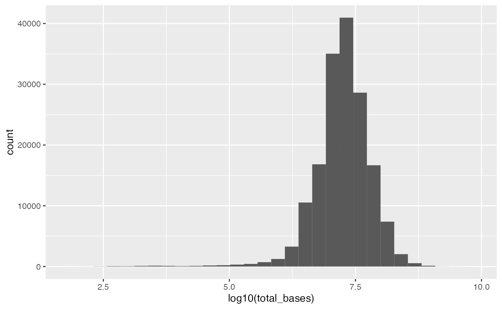
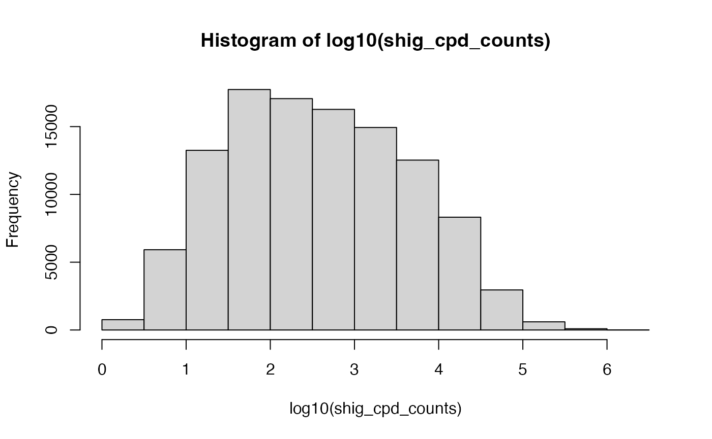

Using the MicroBioMap package
overview.RmdOverview
The human microbiome, particularly in the large intestine, is gaining attention for its role in health and disease, including conditions like colorectal cancer and inflammatory bowel disease. Various factors, including genetics and ethnicity, influence the human microbiome, often tied to geographic regions. As a result, individuals from different global regions tend to have distinct gut microbiomes. While research has shown significant variation in the gut microbiome across countries and social groups, much of the microbiome literature has focused on a limited range of subjects, raising questions about the generalizability of these findings.
To address these limitations, researchers have turned to publicly available microbiome data, revealing an overrepresentation of high-income countries like the United States and Finland in major microbiome research repositories. However, significant variations from the Western baseline are observed when other communities are studied. This suggests that the current understanding of the microbiome may be limited due to geographic gaps in research.
To bridge this gap and enhance the field’s bioinformatic capabilities, the Human Microbiome Compendium is introduced. It comprises over 168,000 human gut microbiome samples from 68 countries, processed using advanced tools and made accessible in various formats, including the MicroBioMap R package and a dedicated website. This dataset is used to analyze global patterns in microbiome composition and identify areas where our knowledge of the human gut microbiome is lacking.
Primary data processing
Amplicon processing was conducted according to the following criteria: If the quantity of forward read files corresponded with the number of reverse read files, we proceeded with paired-end sequencing analysis. However, in cases of a mismatch or the absence of reverse reads, the project was treated as single-ended data. In both scenarios, we employed DADA2 version 1.14.0 for data processing (B. J. Callahan et al. 2016). We utilized broad parameter settings intended to maximize the inclusion of samples while excluding low-quality data: Specifically, we did not apply fixed trimming from either end or impose a maximum read length. Reads shorter than 20 nucleotides, those containing ambiguous (“N”) base calls, and reads aligning to the phiX genome (typically present as a control in Illumina sequencing runs) were eliminated. Additionally, quality-based truncation of reads was disabled. Paired-end reads were merged with a minimum overlap of 20 bases. In certain instances, the merging process failed, resulting in minimal or no merging of forward and reverse reads, often associated with sequencing strategies featuring non-overlapping reads. For studies where less than 50 percent of forward reads merged successfully, we opted to discard the reverse reads rather than concatenate them. This decision aimed to prevent failures in merging due to low-quality calls or discrepancies between forward and reverse read files. In such cases, the reverse reads were excluded, and the projects were reprocessed as single-ended data. When the number of forward reads did not align with the number of reverse reads within a sample, an attempt was made to employ DADA2 to identify the sequence identifier field in the FASTQ file, facilitating the alignment of salvageable samples. In cases where this attempt proved unsuccessful, the reverse reads were removed, and the data was reprocessed as single-ended. Taxonomic assignment was carried out by DADA2, utilizing the SILVA database release 138.1 as a reference (Quast et al. 2013; McLaren and Callahan 2021).
Getting started
Installation
library(BiocManager)
BiocManager::install("seandavi/MicroBioMap")Basic usage
library(MicroBioMap)
# this operation requires about 4GB of RAM
cpd <- getCompendium()
cpd## class: TreeSummarizedExperiment
## dim: 4018 168464
## metadata(0):
## assays(1): counts
## rownames(4018):
## Bacteria.Firmicutes.Clostridia.Oscillospirales.Ruminococcaceae.Subdoligranulum
## Bacteria.Proteobacteria.Gammaproteobacteria.Burkholderiales.Alcaligenaceae.Achromobacter
## ...
## Bacteria.Proteobacteria.Alphaproteobacteria.Rhodobacterales.Rhodobacteraceae.Poseidonocella
## Bacteria.CK-2C2-2.NA.NA.NA.NA
## rowData names(8): kingdom phylum ... species strain
## colnames(168464): PRJDB10485_DRR243823 PRJDB10485_DRR243824 ...
## PRJNA764337_SRR15959628 PRJNA764337_SRR15959674
## colData names(11): srs project ... iso region
## reducedDimNames(0):
## mainExpName: NULL
## altExpNames(0):
## rowLinks: NULL
## rowTree: NULL
## colLinks: NULL
## colTree: NULLSample metadata
The colData slot of the cpd object contains
the information about samples. We can examine the names of the available
metadata:
names(colData(cpd))## [1] "srs" "project" "srr" "library_strategy"
## [5] "library_source" "pubdate" "total_bases" "instrument"
## [9] "geo_loc_name" "iso" "region"We can look at the samples by available regions:
-
Region
table(colData(cpd)$region)## ## Australia/New Zealand Central and Southern Asia ## 3916 5602 ## Eastern and South-Eastern Asia Europe and Northern America ## 18461 103564 ## Latin America and the Caribbean Northern Africa and Western Asia ## 1215 1557 ## Oceania Sub-Saharan Africa ## 4 5953 ## unknown ## 28192 -
Library strategy
table(colData(cpd)$library_strategy)## ## AMPLICON ## 168464 -
Instrument
table(colData(cpd)$instrument)## ## 454 GS Illumina HiSeq 1500 Illumina HiSeq 2000 ## 8790 793 2447 ## Illumina HiSeq 2500 Illumina HiSeq 3000 Illumina HiSeq 4000 ## 10975 701 2651 ## Illumina MiniSeq Illumina MiSeq Illumina NovaSeq 6000 ## 438 134353 920 ## NextSeq 500 NextSeq 550 unspecified ## 820 315 5261 -
Country
## ## usa:new york usa missing ## 14142 12880 12510 5532 ## denmark: copenhagen not applicable ## 5289 4317
Microbe (row) metadata
Each row in cpd represents one microbe. The
rowData contains a data.frame- like set of metadata with
columns kingdom, phylum, etc.
head(rowData(cpd))## DataFrame with 6 rows and 8 columns
## kingdom
## <character>
## Bacteria.Firmicutes.Clostridia.Oscillospirales.Ruminococcaceae.Subdoligranulum Bacteria
## Bacteria.Proteobacteria.Gammaproteobacteria.Burkholderiales.Alcaligenaceae.Achromobacter Bacteria
## Bacteria.Proteobacteria.Gammaproteobacteria.Enterobacterales.Enterobacteriaceae.Escherichia-Shigella Bacteria
## Bacteria.Firmicutes.Clostridia.Oscillospirales.Ruminococcaceae.Faecalibacterium Bacteria
## Bacteria.Proteobacteria.Gammaproteobacteria.Xanthomonadales.Xanthomonadaceae.Stenotrophomonas Bacteria
## Bacteria.Actinobacteriota.Coriobacteriia.Coriobacteriales.Coriobacteriaceae.Collinsella Bacteria
## phylum
## <character>
## Bacteria.Firmicutes.Clostridia.Oscillospirales.Ruminococcaceae.Subdoligranulum Firmicutes
## Bacteria.Proteobacteria.Gammaproteobacteria.Burkholderiales.Alcaligenaceae.Achromobacter Proteobacteria
## Bacteria.Proteobacteria.Gammaproteobacteria.Enterobacterales.Enterobacteriaceae.Escherichia-Shigella Proteobacteria
## Bacteria.Firmicutes.Clostridia.Oscillospirales.Ruminococcaceae.Faecalibacterium Firmicutes
## Bacteria.Proteobacteria.Gammaproteobacteria.Xanthomonadales.Xanthomonadaceae.Stenotrophomonas Proteobacteria
## Bacteria.Actinobacteriota.Coriobacteriia.Coriobacteriales.Coriobacteriaceae.Collinsella Actinobacteriota
## class
## <character>
## Bacteria.Firmicutes.Clostridia.Oscillospirales.Ruminococcaceae.Subdoligranulum Clostridia
## Bacteria.Proteobacteria.Gammaproteobacteria.Burkholderiales.Alcaligenaceae.Achromobacter Gammaproteobacteria
## Bacteria.Proteobacteria.Gammaproteobacteria.Enterobacterales.Enterobacteriaceae.Escherichia-Shigella Gammaproteobacteria
## Bacteria.Firmicutes.Clostridia.Oscillospirales.Ruminococcaceae.Faecalibacterium Clostridia
## Bacteria.Proteobacteria.Gammaproteobacteria.Xanthomonadales.Xanthomonadaceae.Stenotrophomonas Gammaproteobacteria
## Bacteria.Actinobacteriota.Coriobacteriia.Coriobacteriales.Coriobacteriaceae.Collinsella Coriobacteriia
## order
## <character>
## Bacteria.Firmicutes.Clostridia.Oscillospirales.Ruminococcaceae.Subdoligranulum Oscillospirales
## Bacteria.Proteobacteria.Gammaproteobacteria.Burkholderiales.Alcaligenaceae.Achromobacter Burkholderiales
## Bacteria.Proteobacteria.Gammaproteobacteria.Enterobacterales.Enterobacteriaceae.Escherichia-Shigella Enterobacterales
## Bacteria.Firmicutes.Clostridia.Oscillospirales.Ruminococcaceae.Faecalibacterium Oscillospirales
## Bacteria.Proteobacteria.Gammaproteobacteria.Xanthomonadales.Xanthomonadaceae.Stenotrophomonas Xanthomonadales
## Bacteria.Actinobacteriota.Coriobacteriia.Coriobacteriales.Coriobacteriaceae.Collinsella Coriobacteriales
## family
## <character>
## Bacteria.Firmicutes.Clostridia.Oscillospirales.Ruminococcaceae.Subdoligranulum Ruminococcaceae
## Bacteria.Proteobacteria.Gammaproteobacteria.Burkholderiales.Alcaligenaceae.Achromobacter Alcaligenaceae
## Bacteria.Proteobacteria.Gammaproteobacteria.Enterobacterales.Enterobacteriaceae.Escherichia-Shigella Enterobacteriaceae
## Bacteria.Firmicutes.Clostridia.Oscillospirales.Ruminococcaceae.Faecalibacterium Ruminococcaceae
## Bacteria.Proteobacteria.Gammaproteobacteria.Xanthomonadales.Xanthomonadaceae.Stenotrophomonas Xanthomonadaceae
## Bacteria.Actinobacteriota.Coriobacteriia.Coriobacteriales.Coriobacteriaceae.Collinsella Coriobacteriaceae
## genus
## <character>
## Bacteria.Firmicutes.Clostridia.Oscillospirales.Ruminococcaceae.Subdoligranulum Subdoligranulum
## Bacteria.Proteobacteria.Gammaproteobacteria.Burkholderiales.Alcaligenaceae.Achromobacter Achromobacter
## Bacteria.Proteobacteria.Gammaproteobacteria.Enterobacterales.Enterobacteriaceae.Escherichia-Shigella Escherichia-Shigella
## Bacteria.Firmicutes.Clostridia.Oscillospirales.Ruminococcaceae.Faecalibacterium Faecalibacterium
## Bacteria.Proteobacteria.Gammaproteobacteria.Xanthomonadales.Xanthomonadaceae.Stenotrophomonas Stenotrophomonas
## Bacteria.Actinobacteriota.Coriobacteriia.Coriobacteriales.Coriobacteriaceae.Collinsella Collinsella
## species
## <character>
## Bacteria.Firmicutes.Clostridia.Oscillospirales.Ruminococcaceae.Subdoligranulum NA
## Bacteria.Proteobacteria.Gammaproteobacteria.Burkholderiales.Alcaligenaceae.Achromobacter NA
## Bacteria.Proteobacteria.Gammaproteobacteria.Enterobacterales.Enterobacteriaceae.Escherichia-Shigella NA
## Bacteria.Firmicutes.Clostridia.Oscillospirales.Ruminococcaceae.Faecalibacterium NA
## Bacteria.Proteobacteria.Gammaproteobacteria.Xanthomonadales.Xanthomonadaceae.Stenotrophomonas NA
## Bacteria.Actinobacteriota.Coriobacteriia.Coriobacteriales.Coriobacteriaceae.Collinsella NA
## strain
## <character>
## Bacteria.Firmicutes.Clostridia.Oscillospirales.Ruminococcaceae.Subdoligranulum NA
## Bacteria.Proteobacteria.Gammaproteobacteria.Burkholderiales.Alcaligenaceae.Achromobacter NA
## Bacteria.Proteobacteria.Gammaproteobacteria.Enterobacterales.Enterobacteriaceae.Escherichia-Shigella NA
## Bacteria.Firmicutes.Clostridia.Oscillospirales.Ruminococcaceae.Faecalibacterium NA
## Bacteria.Proteobacteria.Gammaproteobacteria.Xanthomonadales.Xanthomonadaceae.Stenotrophomonas NA
## Bacteria.Actinobacteriota.Coriobacteriia.Coriobacteriales.Coriobacteriaceae.Collinsella NAUse cases
Samples in specific Bioprojects
To select samples that belong to specific Bioprojects, we can filter
using the “project” metadata column in the colData.
## [1] "PRJDB10485" "PRJDB10527" "PRJDB10528" "PRJDB10612" "PRJDB11845"
## [6] "PRJDB11894"For example, create a subset of data belonging to Bioprojects:
- PRJDB10485
- PRJDB10527
- PRJDB10528
- PRJDB10612
project_ids <- c("PRJDB10485", "PRJDB10527", "PRJDB10528", "PRJDB10612")
cpd_sub_by_project_ids <- cpd[, colData(cpd)$project %in% project_ids]
cpd_sub_by_project_ids## class: TreeSummarizedExperiment
## dim: 4018 637
## metadata(0):
## assays(1): counts
## rownames(4018):
## Bacteria.Firmicutes.Clostridia.Oscillospirales.Ruminococcaceae.Subdoligranulum
## Bacteria.Proteobacteria.Gammaproteobacteria.Burkholderiales.Alcaligenaceae.Achromobacter
## ...
## Bacteria.Proteobacteria.Alphaproteobacteria.Rhodobacterales.Rhodobacteraceae.Poseidonocella
## Bacteria.CK-2C2-2.NA.NA.NA.NA
## rowData names(8): kingdom phylum ... species strain
## colnames(637): PRJDB10485_DRR243823 PRJDB10485_DRR243824 ...
## PRJDB10612_DRR254611 PRJDB10612_DRR254699
## colData names(11): srs project ... iso region
## reducedDimNames(0):
## mainExpName: NULL
## altExpNames(0):
## rowLinks: NULL
## rowTree: NULL
## colLinks: NULL
## colTree: NULLSamples from a specific world region
To select a subset of samples from a specific world region, subset by the “columns” of the dataset. The following code ummarized the regions are available and the number of samples in each region.
##
## Europe and Northern America unknown
## 103564 28192
## Eastern and South-Eastern Asia Sub-Saharan Africa
## 18461 5953
## Central and Southern Asia Australia/New Zealand
## 5602 3916
## Northern Africa and Western Asia Latin America and the Caribbean
## 1557 1215
## Oceania
## 4Now, select only those samples from, for example, “Sub-Saharan Africa”.
cpd_africa <- cpd[, colData(cpd)$region == "Sub-Saharan Africa"]
cpd_africa## class: TreeSummarizedExperiment
## dim: 4018 5953
## metadata(0):
## assays(1): counts
## rownames(4018):
## Bacteria.Firmicutes.Clostridia.Oscillospirales.Ruminococcaceae.Subdoligranulum
## Bacteria.Proteobacteria.Gammaproteobacteria.Burkholderiales.Alcaligenaceae.Achromobacter
## ...
## Bacteria.Proteobacteria.Alphaproteobacteria.Rhodobacterales.Rhodobacteraceae.Poseidonocella
## Bacteria.CK-2C2-2.NA.NA.NA.NA
## rowData names(8): kingdom phylum ... species strain
## colnames(5953): PRJDB10485_DRR243823 PRJDB10485_DRR243824 ...
## PRJNA706727_SRR13886715 PRJNA706727_SRR13886719
## colData names(11): srs project ... iso region
## reducedDimNames(0):
## mainExpName: NULL
## altExpNames(0):
## rowLinks: NULL
## rowTree: NULL
## colLinks: NULL
## colTree: NULLSamples from a specific country
To select a subset of samples from a specific country, subset by the “columns” of the dataset. The following code ummarized the countries are available and the number of samples in each country.
library(forcats)
library(ggplot2)
ggplot(as.data.frame(colData(cpd)),
aes(x = fct_infreq(iso))) +
geom_bar(stat='count') +
theme(axis.text.x = element_text(angle = 90, hjust = 1)) +
labs(x = "Country", y = "Number of samples") +
scale_y_log10()
Enrich data with country names
Using the countrycode package, we can convert the iso
codes to country names.
library(countrycode)
colData(cpd)$country <- countrycode(colData(cpd)$iso, "iso2c", "country.name")## Warning: Some values were not matched unambiguously: UNKNOWN
# or add the iso3c code
colData(cpd)$iso3c <- countrycode(colData(cpd)$iso, "iso2c", "iso3c")## Warning: Some values were not matched unambiguously: UNKNOWNHistogram of total bases per sample
library(ggplot2)
ggplot(as.data.frame(colData(cpd)), aes(x = log10(total_bases))) +
geom_histogram()
Samples filtered by presence of microbe
There are over 4000 microbes represented in the compendium. Some are fairly rare and we may want to subset the compendium to only those with a specific bug in the sample. Here, we pick an arbitrary examplar to show just the mechanics.
shig_cpd_counts = counts(cpd)['Bacteria.Proteobacteria.Gammaproteobacteria.Enterobacterales.Enterobacteriaceae.Escherichia-Shigella',]Examine the distribution of abundance across all samples in the compendium.
Picking an arbitrary threshold (after all, this is only an example), we can limit samples to those with plenty of our bacteria of interest present.
## [1] 4018 72769sessionInfo
## R version 4.3.0 (2023-04-21)
## Platform: aarch64-apple-darwin20 (64-bit)
## Running under: macOS Ventura 13.1
##
## Matrix products: default
## BLAS: /Library/Frameworks/R.framework/Versions/4.3-arm64/Resources/lib/libRblas.0.dylib
## LAPACK: /Library/Frameworks/R.framework/Versions/4.3-arm64/Resources/lib/libRlapack.dylib; LAPACK version 3.11.0
##
## locale:
## [1] en_US.UTF-8/en_US.UTF-8/en_US.UTF-8/C/en_US.UTF-8/en_US.UTF-8
##
## time zone: America/New_York
## tzcode source: internal
##
## attached base packages:
## [1] stats4 stats graphics grDevices utils datasets methods
## [8] base
##
## other attached packages:
## [1] countrycode_1.5.0 ggplot2_3.4.2
## [3] forcats_1.0.0 MicroBioMap_0.99.13
## [5] ape_5.7-1 TreeSummarizedExperiment_2.8.0
## [7] Biostrings_2.68.1 XVector_0.40.0
## [9] SingleCellExperiment_1.22.0 SummarizedExperiment_1.30.2
## [11] Biobase_2.60.0 GenomicRanges_1.52.0
## [13] GenomeInfoDb_1.36.1 IRanges_2.34.1
## [15] S4Vectors_0.38.1 BiocGenerics_0.46.0
## [17] MatrixGenerics_1.12.2 matrixStats_1.0.0
##
## loaded via a namespace (and not attached):
## [1] tidyselect_1.2.0 farver_2.1.1 dplyr_1.1.2
## [4] blob_1.2.4 filelock_1.0.2 R.utils_2.12.2
## [7] bitops_1.0-7 fastmap_1.1.1 RCurl_1.98-1.12
## [10] lazyeval_0.2.2 BiocFileCache_2.8.0 digest_0.6.33
## [13] lifecycle_1.0.3 tidytree_0.4.2 RSQLite_2.3.1
## [16] magrittr_2.0.3 compiler_4.3.0 rlang_1.1.1
## [19] sass_0.4.6 tools_4.3.0 utf8_1.2.3
## [22] yaml_2.3.7 data.table_1.14.8 knitr_1.43
## [25] labeling_0.4.2 S4Arrays_1.0.4 bit_4.0.5
## [28] curl_5.0.1 DelayedArray_0.26.6 BiocParallel_1.34.2
## [31] withr_2.5.0 purrr_1.0.1 desc_1.4.2
## [34] R.oo_1.25.0 grid_4.3.0 fansi_1.0.4
## [37] colorspace_2.1-0 scales_1.2.1 cli_3.6.1
## [40] rmarkdown_2.23 crayon_1.5.2 ragg_1.2.5
## [43] treeio_1.24.1 generics_0.1.3 httr_1.4.6
## [46] DBI_1.1.3 cachem_1.0.8 stringr_1.5.0
## [49] zlibbioc_1.46.0 parallel_4.3.0 vctrs_0.6.3
## [52] yulab.utils_0.0.6 Matrix_1.6-0 jsonlite_1.8.7
## [55] bit64_4.0.5 systemfonts_1.0.4 jquerylib_0.1.4
## [58] tidyr_1.3.0 glue_1.6.2 pkgdown_2.0.7
## [61] codetools_0.2-19 gtable_0.3.3 stringi_1.7.12
## [64] munsell_0.5.0 tibble_3.2.1 pillar_1.9.0
## [67] htmltools_0.5.5 GenomeInfoDbData_1.2.10 R6_2.5.1
## [70] dbplyr_2.3.3 textshaping_0.3.6 rprojroot_2.0.3
## [73] evaluate_0.21 lattice_0.21-8 highr_0.10
## [76] R.methodsS3_1.8.2 memoise_2.0.1 bslib_0.5.0
## [79] Rcpp_1.0.11 nlme_3.1-162 xfun_0.39
## [82] fs_1.6.2 pkgconfig_2.0.3